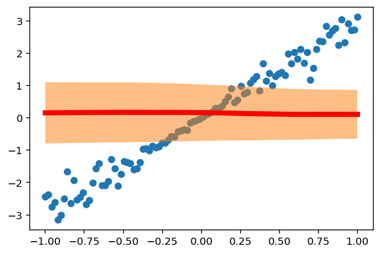
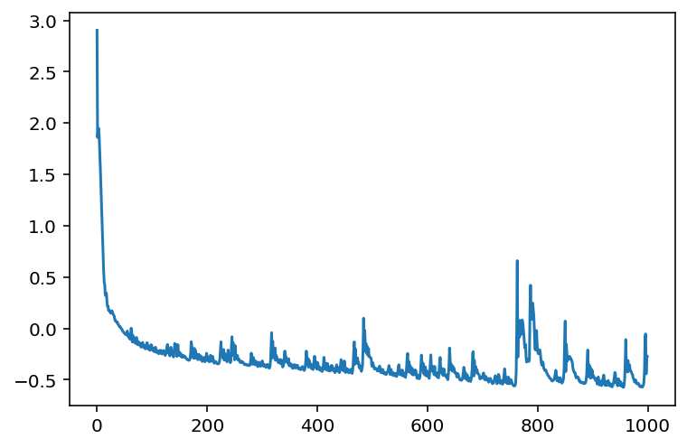
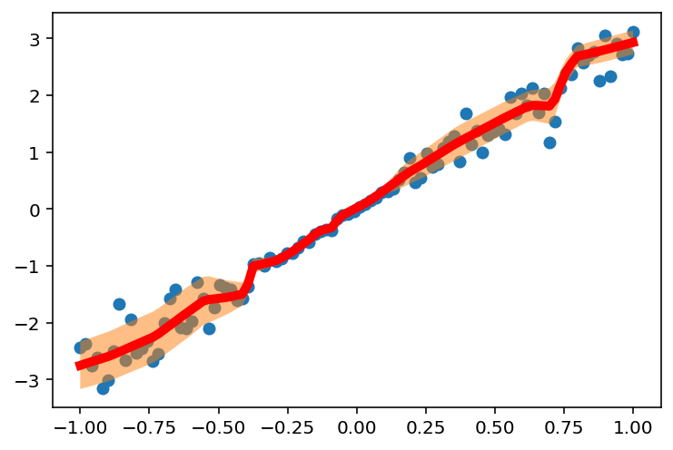
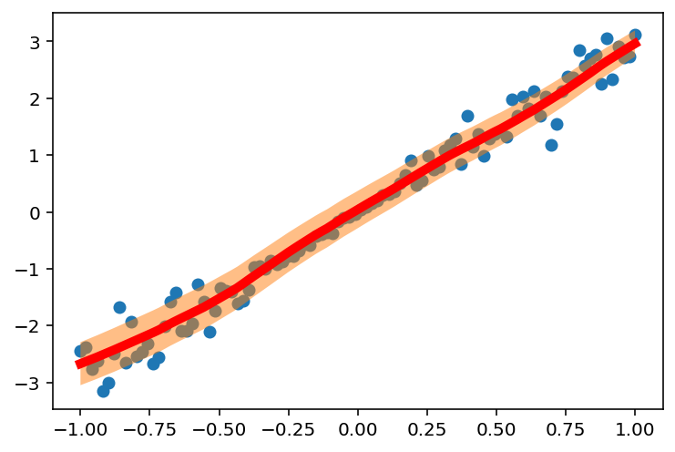
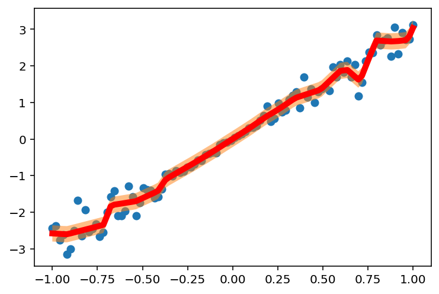

# Imports
import torch
import torch.nn as nn
import torch.nn.functional as F
import torch.optim as optim
import torch.distributions as dist
import matplotlib.pyplot as plt
%matplotlib inline
%config InlineBackend.figure_format = 'retina'
# Set device to GPU if available
device = torch.device("cuda" if torch.cuda.is_available() else "cpu")Dataset
### Heteroskedastic Noise Dataset
# Fix random seed
torch.manual_seed(0)
x = torch.linspace(-1, 1, 100)
f = lambda x: 3 * x
eps = torch.randn(x.size()) * x * 0.5
y = f(x) + eps
plt.scatter(x.numpy(), y.numpy())
plt.plot(x.numpy(), 3 * x.numpy(), 'r-', lw=5)
# Move data to device
x = x.to(device)
y = y.to(device)
class HeteroskedasticMLP(nn.Module):
def __init__(self, input_dim, hidden_dim):
super(HeteroskedasticMLP, self).__init__()
self.fc1 = nn.Linear(input_dim, hidden_dim)
self.fc2 = nn.Linear(hidden_dim, hidden_dim)
self.fc3 = nn.Linear(hidden_dim, 2)
def forward(self, x):
x = F.relu(self.fc1(x))
x = F.relu(self.fc2(x))
z = self.fc3(x)
# Get mu and log_sigma from the last layer
mu, log_sigma = z[:, 0], z[:, 1]
return mu, log_sigma# Create model
model = HeteroskedasticMLP(1, 100)
# Move model to device
model = model.to(device)
# Define loss function
def heteroskedastic_loss(y, mu, log_sigma):
sigma = torch.exp(log_sigma)
ll = dist.Normal(mu.ravel(), sigma.ravel()).log_prob(y.ravel())
return -ll.mean()with torch.no_grad():
mu, log_sigma = model(x.unsqueeze(1))
loss = heteroskedastic_loss(y, mu, log_sigma)
print(loss)tensor(2.9041, device='cuda:0')# Plot initial predictions
with torch.no_grad():
mu, log_sigma = model(x.unsqueeze(1))
sigma = torch.exp(log_sigma)
plt.scatter(x.cpu().numpy(), y.cpu().numpy())
plt.plot(x.cpu().numpy(), mu.cpu().numpy(), 'r-', lw=5)
plt.fill_between(x.cpu().numpy(), mu.cpu().numpy() - sigma.cpu().numpy(), mu.cpu().numpy() + sigma.cpu().numpy(), alpha=0.5)
# Train model with Adam
optimizer = optim.Adam(model.parameters(), lr=0.01)
every_i = 10
outs= {}
losses = []
for epoch in range(1000):
# Store model predictions every_i epochs
if epoch % every_i == 0:
with torch.no_grad():
mu, log_sigma = model(x.unsqueeze(1))
outs[epoch] = {"mu":mu.cpu().numpy(),
"log_sigma":log_sigma.cpu().numpy()}
# Print loss
loss = heteroskedastic_loss(y, mu, log_sigma)
print("Epoch: {}, Loss: {}".format(epoch, loss.item()))
# Forward pass
mu, log_sigma = model(x.unsqueeze(1))
loss = heteroskedastic_loss(y, mu, log_sigma)
losses.append(loss.item())
# Backward pass
optimizer.zero_grad()
loss.backward()
optimizer.step()
Epoch: 0, Loss: 2.904067277908325
Epoch: 10, Loss: 0.8787063956260681
Epoch: 20, Loss: 0.21688087284564972
Epoch: 30, Loss: 0.13268794119358063
Epoch: 40, Loss: 0.026131045073270798
Epoch: 50, Loss: -0.04720224440097809
Epoch: 60, Loss: -0.10559850186109543
Epoch: 70, Loss: -0.14626550674438477
Epoch: 80, Loss: -0.18292102217674255
Epoch: 90, Loss: -0.1582060158252716
Epoch: 100, Loss: -0.20254844427108765
Epoch: 110, Loss: -0.21556152403354645
Epoch: 120, Loss: -0.21742510795593262
Epoch: 130, Loss: -0.2227230668067932
Epoch: 140, Loss: -0.22566699981689453
Epoch: 150, Loss: -0.23224511742591858
Epoch: 160, Loss: -0.27615076303482056
Epoch: 170, Loss: -0.239326611161232
Epoch: 180, Loss: -0.2770726978778839
Epoch: 190, Loss: -0.3069627285003662
Epoch: 200, Loss: -0.2779914140701294
Epoch: 210, Loss: -0.27238503098487854
Epoch: 220, Loss: -0.3456583023071289
Epoch: 230, Loss: -0.2058892548084259
Epoch: 240, Loss: -0.2964232563972473
Epoch: 250, Loss: -0.306146502494812
Epoch: 260, Loss: -0.3319600522518158
Epoch: 270, Loss: -0.3472471833229065
Epoch: 280, Loss: -0.24077902734279633
Epoch: 290, Loss: -0.3256893455982208
Epoch: 300, Loss: -0.31607362627983093
Epoch: 310, Loss: -0.35320231318473816
Epoch: 320, Loss: -0.28444549441337585
Epoch: 330, Loss: -0.3202727437019348
Epoch: 340, Loss: -0.27290675044059753
Epoch: 350, Loss: -0.3401243984699249
Epoch: 360, Loss: -0.3831108808517456
Epoch: 370, Loss: -0.4019301235675812
Epoch: 380, Loss: -0.22064653038978577
Epoch: 390, Loss: -0.3605082631111145
Epoch: 400, Loss: -0.35815513134002686
Epoch: 410, Loss: -0.3972603976726532
Epoch: 420, Loss: -0.4117273688316345
Epoch: 430, Loss: -0.3907165825366974
Epoch: 440, Loss: -0.4307834506034851
Epoch: 450, Loss: -0.3612615466117859
Epoch: 460, Loss: -0.40269431471824646
Epoch: 470, Loss: -0.3225415050983429
Epoch: 480, Loss: -0.41836538910865784
Epoch: 490, Loss: -0.24793219566345215
Epoch: 500, Loss: -0.3380727171897888
Epoch: 510, Loss: -0.41523680090904236
Epoch: 520, Loss: -0.42837637662887573
Epoch: 530, Loss: -0.3614443242549896
Epoch: 540, Loss: -0.45410436391830444
Epoch: 550, Loss: -0.45134565234184265
Epoch: 560, Loss: -0.4771314263343811
Epoch: 570, Loss: -0.37739044427871704
Epoch: 580, Loss: -0.4571133255958557
Epoch: 590, Loss: -0.3359305262565613
Epoch: 600, Loss: -0.4643993377685547
Epoch: 610, Loss: -0.4199213981628418
Epoch: 620, Loss: -0.48145925998687744
Epoch: 630, Loss: -0.39580008387565613
Epoch: 640, Loss: -0.1910054236650467
Epoch: 650, Loss: -0.4236544072628021
Epoch: 660, Loss: -0.5013049840927124
Epoch: 670, Loss: -0.4683534502983093
Epoch: 680, Loss: -0.46403956413269043
Epoch: 690, Loss: -0.40134137868881226
Epoch: 700, Loss: -0.4733808934688568
Epoch: 710, Loss: -0.49756529927253723
Epoch: 720, Loss: -0.5301379561424255
Epoch: 730, Loss: -0.4607459604740143
Epoch: 740, Loss: -0.39366793632507324
Epoch: 750, Loss: -0.5319433212280273
Epoch: 760, Loss: -0.5354660153388977
Epoch: 770, Loss: -0.058051079511642456
Epoch: 780, Loss: -0.3275614082813263
Epoch: 790, Loss: 0.18349406123161316
Epoch: 800, Loss: -0.22516368329524994
Epoch: 810, Loss: -0.3372257649898529
Epoch: 820, Loss: -0.46307849884033203
Epoch: 830, Loss: -0.49147552251815796
Epoch: 840, Loss: -0.4938444495201111
Epoch: 850, Loss: 0.0712403729557991
Epoch: 860, Loss: -0.3009780943393707
Epoch: 870, Loss: -0.4817323088645935
Epoch: 880, Loss: -0.5302295088768005
Epoch: 890, Loss: -0.31002792716026306
Epoch: 900, Loss: -0.4778610169887543
Epoch: 910, Loss: -0.473131388425827
Epoch: 920, Loss: -0.4545957148075104
Epoch: 930, Loss: -0.5534473061561584
Epoch: 940, Loss: -0.42977163195610046
Epoch: 950, Loss: -0.5166257619857788
Epoch: 960, Loss: -0.10863237082958221
Epoch: 970, Loss: -0.4224903881549835
Epoch: 980, Loss: -0.5379492044448853
Epoch: 990, Loss: -0.5719044804573059# Plot loss
plt.plot(losses)
# Plot final predictions
with torch.no_grad():
mu, log_sigma = model(x.unsqueeze(1))
sigma = torch.exp(log_sigma)
plt.scatter(x.cpu().numpy(), y.cpu().numpy())
plt.plot(x.cpu().numpy(), mu.cpu().numpy(), 'r-', lw=5)
plt.fill_between(x.cpu().numpy(), mu.cpu().numpy() - sigma.cpu().numpy(), mu.cpu().numpy() + sigma.cpu().numpy(), alpha=0.5)
# Save predictions and use ffmpeg to create a video
import imageio
import os
import numpy as np
# Filter out warnings
import warnings
warnings.filterwarnings("ignore")
images = []
for i in range(0, 40, every_i):
plt.clf()
plt.scatter(x.cpu().numpy(), y.cpu().numpy())
plt.plot(x.cpu().numpy(), outs[i]["mu"], 'r-', lw=5)
plt.fill_between(x.cpu().numpy(), outs[i]["mu"] - np.exp(outs[i]["log_sigma"]),
outs[i]["mu"] + np.exp(outs[i]["log_sigma"]), alpha=0.5)
plt.savefig("tmp.png")
images.append(imageio.imread("tmp.png"))
os.remove("tmp.png")
imageio.mimsave('heteroskedastic.gif', images, duration=0.1)
# Plot gif
from IPython.display import Image
Image(url='heteroskedastic.gif')
# Homoskedastic model
class HomoskedasticMLP(nn.Module):
def __init__(self, input_dim, hidden_dim):
super(HomoskedasticMLP, self).__init__()
self.fc1 = nn.Linear(input_dim, hidden_dim)
self.fc2 = nn.Linear(hidden_dim, hidden_dim)
self.fc3 = nn.Linear(hidden_dim, 1)
def forward(self, x):
x = F.relu(self.fc1(x))
x = F.relu(self.fc2(x))
z = self.fc3(x)
return z
# Create model
model = HomoskedasticMLP(1, 100)
# Move model to device
model = model.to(device)
# Learn sigma with a parameter
log_sigma = nn.Parameter(torch.tensor(-1.0).to(device))# Evaluate loss function on homoskedastic model
m = HomoskedasticMLP(1, 100)
m = m.to(device)
with torch.no_grad():
mu = m(x.unsqueeze(1))
loss = heteroskedastic_loss(y, mu.ravel(), log_sigma)
print(loss)tensor(10.7744, device='cuda:0')
# Train
optimizer = optim.Adam(list(model.parameters()) + [log_sigma], lr=0.01)
every_i = 10
outs= {}
losses = []
for epoch in range(1000):
# Store model predictions every_i epochs
if epoch % every_i == 0:
with torch.no_grad():
mu = model(x.unsqueeze(1))
outs[epoch] = {"mu":mu.cpu().numpy(),
"log_sigma":log_sigma.cpu().numpy()}
# Print loss, sigma
loss = heteroskedastic_loss(y, mu, log_sigma)
print("Epoch: {}, Loss: {}, Sigma: {}".format(epoch, loss.item(), torch.exp(log_sigma).item()))
# Forward pass
mu = model(x.unsqueeze(1))
loss = heteroskedastic_loss(y, mu, log_sigma)
losses.append(loss.item())
# Backward pass
optimizer.zero_grad()
loss.backward()
optimizer.step()Epoch: 0, Loss: 11.295394897460938, Sigma: 0.3678794801235199
Epoch: 10, Loss: 0.25705787539482117, Sigma: 0.39439815282821655
Epoch: 20, Loss: 0.2636868357658386, Sigma: 0.40588462352752686
Epoch: 30, Loss: 0.29097408056259155, Sigma: 0.40923401713371277
Epoch: 40, Loss: 0.2588760554790497, Sigma: 0.40765181183815
Epoch: 50, Loss: 0.21829169988632202, Sigma: 0.40334761142730713
Epoch: 60, Loss: 0.20873460173606873, Sigma: 0.3975759744644165
Epoch: 70, Loss: 0.19598166644573212, Sigma: 0.3910154104232788
Epoch: 80, Loss: 0.18514487147331238, Sigma: 0.38402578234672546
Epoch: 90, Loss: 0.17355667054653168, Sigma: 0.3768104016780853
Epoch: 100, Loss: 0.16240520775318146, Sigma: 0.36949458718299866
Epoch: 110, Loss: 0.151631698012352, Sigma: 0.36216607689857483
Epoch: 120, Loss: 0.14121828973293304, Sigma: 0.3548945188522339
Epoch: 130, Loss: 0.13112765550613403, Sigma: 0.3477365970611572
Epoch: 140, Loss: 0.12154199182987213, Sigma: 0.3407391607761383
Epoch: 150, Loss: 0.11244719475507736, Sigma: 0.33394208550453186
Epoch: 160, Loss: 0.10387172549962997, Sigma: 0.327378511428833
Epoch: 170, Loss: 0.09589903801679611, Sigma: 0.32107508182525635
Epoch: 180, Loss: 0.08854608237743378, Sigma: 0.3150540590286255
Epoch: 190, Loss: 0.08189988881349564, Sigma: 0.3093332350254059
Epoch: 200, Loss: 0.07573989033699036, Sigma: 0.30392542481422424
Epoch: 210, Loss: 0.07032809406518936, Sigma: 0.29883837699890137
Epoch: 220, Loss: 0.06527172774076462, Sigma: 0.294076144695282
Epoch: 230, Loss: 0.060850128531455994, Sigma: 0.28963765501976013
Epoch: 240, Loss: 0.05669783428311348, Sigma: 0.2855187654495239
Epoch: 250, Loss: 0.05313286557793617, Sigma: 0.2817113697528839
Epoch: 260, Loss: 0.04971342161297798, Sigma: 0.2782053053379059
Epoch: 270, Loss: 0.04643983766436577, Sigma: 0.2749860882759094
Epoch: 280, Loss: 0.04914667457342148, Sigma: 0.27207323908805847
Epoch: 290, Loss: 0.04101118817925453, Sigma: 0.26953327655792236
Epoch: 300, Loss: 0.038715146481990814, Sigma: 0.2671847343444824
Epoch: 310, Loss: 0.03739570453763008, Sigma: 0.2649960517883301
Epoch: 320, Loss: 0.03401820734143257, Sigma: 0.26296529173851013
Epoch: 330, Loss: 0.040461644530296326, Sigma: 0.26111650466918945
Epoch: 340, Loss: 0.03497060015797615, Sigma: 0.2595013380050659
Epoch: 350, Loss: 0.02781158685684204, Sigma: 0.25808778405189514
Epoch: 360, Loss: 0.025791816413402557, Sigma: 0.25677621364593506
Epoch: 370, Loss: 0.027708368375897408, Sigma: 0.25549817085266113
Epoch: 380, Loss: 0.034673772752285004, Sigma: 0.25454577803611755
Epoch: 390, Loss: 0.01713133230805397, Sigma: 0.25372540950775146
Epoch: 400, Loss: 0.016848329454660416, Sigma: 0.2527487576007843
Epoch: 410, Loss: 0.012192592024803162, Sigma: 0.2516818642616272
Epoch: 420, Loss: 0.01921256259083748, Sigma: 0.25061044096946716
Epoch: 430, Loss: 0.023222172632813454, Sigma: 0.25001898407936096
Epoch: 440, Loss: 0.007255341857671738, Sigma: 0.24958008527755737
Epoch: 450, Loss: 0.0056707593612372875, Sigma: 0.24894456565380096
Epoch: 460, Loss: 0.0030113577377051115, Sigma: 0.24814389646053314
Epoch: 470, Loss: 2.707242856558878e-05, Sigma: 0.24727357923984528
Epoch: 480, Loss: 0.03657829388976097, Sigma: 0.24644359946250916
Epoch: 490, Loss: 0.006805286277085543, Sigma: 0.2461744099855423
Epoch: 500, Loss: -0.00197244412265718, Sigma: 0.2457384169101715
Epoch: 510, Loss: -0.0030348419677466154, Sigma: 0.2451060265302658
Epoch: 520, Loss: -0.009371060878038406, Sigma: 0.2443939745426178
Epoch: 530, Loss: 0.02710571512579918, Sigma: 0.24379168450832367
Epoch: 540, Loss: -0.012330576777458191, Sigma: 0.24365800619125366
Epoch: 550, Loss: -0.007400104776024818, Sigma: 0.2433018535375595
Epoch: 560, Loss: -0.011339571326971054, Sigma: 0.24270297586917877
Epoch: 570, Loss: -0.01660667359828949, Sigma: 0.24198408424854279
Epoch: 580, Loss: 0.021730687469244003, Sigma: 0.2414063662290573
Epoch: 590, Loss: -0.018733227625489235, Sigma: 0.2413862645626068
Epoch: 600, Loss: -0.013013801537454128, Sigma: 0.24117600917816162
Epoch: 610, Loss: -0.022421661764383316, Sigma: 0.24065044522285461
Epoch: 620, Loss: -0.02372388355433941, Sigma: 0.23987528681755066
Epoch: 630, Loss: -0.01686267741024494, Sigma: 0.23911306262016296
Epoch: 640, Loss: -0.03131835535168648, Sigma: 0.2387116551399231
Epoch: 650, Loss: -0.003353776875883341, Sigma: 0.2382737398147583
Epoch: 660, Loss: -0.018221279606223106, Sigma: 0.23798178136348724
Epoch: 670, Loss: -0.02976962924003601, Sigma: 0.23750412464141846
Epoch: 680, Loss: -0.04258110001683235, Sigma: 0.2370409518480301
Epoch: 690, Loss: -0.01051234733313322, Sigma: 0.23640307784080505
Epoch: 700, Loss: -0.03791022673249245, Sigma: 0.23605792224407196
Epoch: 710, Loss: -0.0460396483540535, Sigma: 0.23555223643779755
Epoch: 720, Loss: -0.03509620949625969, Sigma: 0.23478062450885773
Epoch: 730, Loss: 0.03369412198662758, Sigma: 0.23536834120750427
Epoch: 740, Loss: -0.052086129784584045, Sigma: 0.2364046573638916
Epoch: 750, Loss: -0.04687647894024849, Sigma: 0.23619304597377777
Epoch: 760, Loss: -0.05750618875026703, Sigma: 0.23515582084655762
Epoch: 770, Loss: -0.060779087245464325, Sigma: 0.2337678074836731
Epoch: 780, Loss: -0.06353538483381271, Sigma: 0.23233218491077423
Epoch: 790, Loss: -0.06269311159849167, Sigma: 0.23100987076759338
Epoch: 800, Loss: 0.04665428027510643, Sigma: 0.2304842472076416
Epoch: 810, Loss: -0.03871075063943863, Sigma: 0.23162372410297394
Epoch: 820, Loss: -0.058183226734399796, Sigma: 0.23170208930969238
Epoch: 830, Loss: -0.06906687468290329, Sigma: 0.2309386432170868
Epoch: 840, Loss: -0.07344689220190048, Sigma: 0.2297821193933487
Epoch: 850, Loss: -0.06889341026544571, Sigma: 0.2285580188035965
Epoch: 860, Loss: -0.02580447681248188, Sigma: 0.22790952026844025
Epoch: 870, Loss: -0.05484987795352936, Sigma: 0.22809277474880219
Epoch: 880, Loss: -0.06924512982368469, Sigma: 0.2277873456478119
Epoch: 890, Loss: -0.08295488357543945, Sigma: 0.22713424265384674
Epoch: 900, Loss: -0.07165029644966125, Sigma: 0.2261764407157898
Epoch: 910, Loss: 0.10657352209091187, Sigma: 0.22907805442810059
Epoch: 920, Loss: -0.0770278126001358, Sigma: 0.23380540311336517
Epoch: 930, Loss: -0.07862641662359238, Sigma: 0.23497235774993896
Epoch: 940, Loss: -0.07769864052534103, Sigma: 0.23367847502231598
Epoch: 950, Loss: -0.08631709963083267, Sigma: 0.23134003579616547
Epoch: 960, Loss: -0.08885804563760757, Sigma: 0.22882986068725586
Epoch: 970, Loss: -0.09149400144815445, Sigma: 0.2265719324350357
Epoch: 980, Loss: -0.09441927075386047, Sigma: 0.2247086465358734
Epoch: 990, Loss: -0.09578744322061539, Sigma: 0.22321872413158417# Plot final predictions
with torch.no_grad():
mu = model(x.unsqueeze(1))
sigma = torch.exp(log_sigma)
# Move to cpu
mu = mu.cpu().numpy()
sigma = sigma.cpu().numpy()
plt.scatter(x.cpu().numpy(), y.cpu().numpy())
plt.plot(x.cpu().numpy(), mu, 'r-', lw=5)
plt.fill_between(x.cpu().numpy(), (mu - sigma).flatten(), (mu + sigma).flatten(), alpha=0.5)